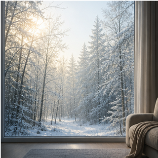
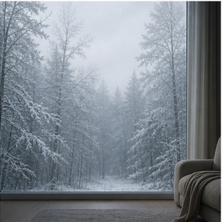
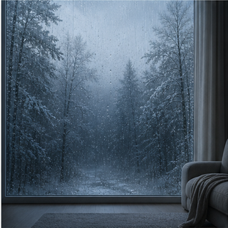
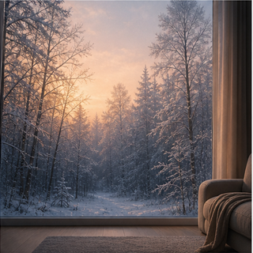
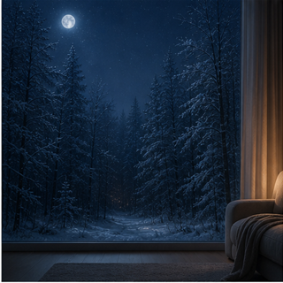

晴天白天 · 待唤醒
靠近或说话唤醒
低频呼吸，只扩张细环，不让球变成彩色实体。
背景图是独立的静态资源；球只在中心小区域更新。所有球都保持“深色中心、边缘发光”，不会用重颜色遮挡背景。

晴天白天
阴天
下雨
傍晚
夜晚低频呼吸，只扩张细环，不让球变成彩色实体。
左右声波为动态区域，保持冷白蓝边缘光。
不用轨道和粒子，改成两段细弧围绕球缓慢转动。
毛玻璃感由半透明雾面底、亮边和内高光实现，上板不需要实时模糊。